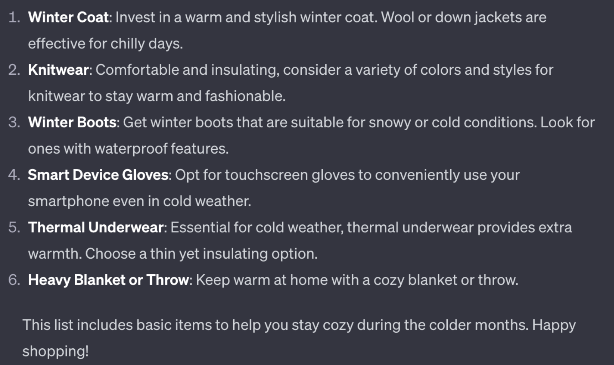
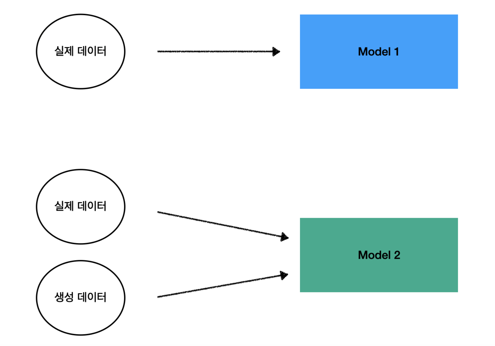

Text Data Augmentation via ChatGPT
심재인
Department of Statistics, Jeonbuk National University
Outline
Introduction
Related Works
Data Description
Experimental Research
Conclusion and Discussion
Introduction
Introduction
Introduction to ChatGPT
ChatGPT is a language model developed by OpenAI, functioning as an interactive artificial intelligence for conversation.
Its primary capabilities lie in natural language understanding and generation. Leveraging the provided data, this model can respond to questions on various topics, engage in conversation, and generate sentences, paragraphs, or entire pieces of text.
Introduction
Figure 1: Illustration of GPT Application - Responding to a query regarding appropriate shopping items for colder weather, GPT provides a recommendation.
Introduction
Assessing the Potential of GPT-Generated Content
- While prior examples have demonstrated the practicality of GPT for various tasks, the potential of GPT-generated content as a dataset has not been thoroughly explored.
- We aim to bridge this research void by conducting a series of experiments to enrich textual data with GPT-generated models and evaluate the enhancements in performance on subsequent machine learning tasks.
Introduction
The research is divided into two main aspects:
- Do the materials generated by GPT possess value as augmented data?
- If they hold value, how significant is that value compared to actual data?
- Whether they are of equivalent value. If not equivalent, whether they have value as independent data.
- If they can only serve as a supporting role to actual data.
Introduction
Figure 2: Graphical Illustration of the Research Methodology
Related Works
Related Works
Text augmentation can be useful in various situations, and here are some examples of when text augmentation may be needed. Of course, text augmentation can also be useful in other cases.
- Imbalanced Data
- Few-Shot Learning (Zero-Shot Learning)
- Privacy Protection
Related Works
Imbalanced Data:
- The data imbalance problem in machine learning, where one class is significantly larger than another, can lead to model bias towards the majority class.
- To address this, literature offers various solutions categorized into pre-processing, cost-sensitive, algorithmic, and hybrid methods, with resampling techniques like under-sampling, over-sampling (e.g., SMOTE, ADASYN), and hybrid methods being prominent for structured data, while GAN-based approaches are emerging for image data.
Related Works
Few-Shot Learning (or Zero-Shot Learning):
- Few-shot text classification involves training models with a minimal number of examples.
- Studies have investigated methods for this approach, focusing on machine learning techniques to select the best category samples for effective classification.
Related Works
In NLP, there are two main types of data augmentation methods:
- Traditional text-level methods, like synonym replacement, random deletion, and random insertion, which rely on direct operations on existing samples (Feng et al. 2021).
- Methods utilizing language models, including backtranslation (Sennrich, Haddow, and Birch 2015) and word vector interpolation (Jindal et al. 2020), which leverage language models for data augmentation .
Related Works
However, traditional methods have limitations in terms of text data accuracy and diversity, as discussed in a survey by Bayer et al. (Bayer, Kaufhold, and Reuter 2022).
Recently, with the emergence of very large language models like the GPT family, there has been active research aimed at using them to augment text and address various NLP problems.
Related Works
- Haixing Dai and colleagues introduced AugGPT(Dai et al. 2023), a text data augmentation technique using ChatGPT to rephrase sentences for enhanced NLP model training and improved text classification results.
- Seokjin Oh and Woohwan Jung proposed a data augmentation method for neural machine translation that leverages generative language models to enhance performance (Oh, Jung, et al. 2023).
Data Description
Data Description
Real-World Data from Kaggle
- Overview of Kaggle Dataset
- Characteristics and Features of the Data
Synthetic Data Generation via GPT
- Detailed Process of Data Creation with GPT
- Challenges in the Generation Process (e.g., Emoticons, Length, Duplicated Content)
Data from Kaggle
Data from ChatGPT
Verification of Similarity:
Kaggle-sourced ESTP Data
Splinter Cell Blacklist for Xbox 360. If you get hated on then it’s because you as a person have something to work on. I often come off to people with the opposite of my intention, if I don’t listen to my gut. Sometimes I over think my natural social skills and come off as a sarcastic douche.
ChatGPT-generated ESTP Data
Today, I had a fantastic experience enjoying adventures in nature! Hiking up a tall mountain, I experienced the beauty of the great outdoors. The view from the summit was absolutely breathtaking. Adventures like these always bring new challenges and a sense of accomplishment, so I want to do more of them!
Data from ChatGPT
MBTI example
Data from ChatGPT
Title: GPT Data Collection Process
Data Collection Process:
Define the MBTI for Performance Measurement.
Define the Topic: Clearly define a topic for ChatGPT, presenting scenarios such as traveling to a destination or being invited to a friend’s birthday party. Request predictions on how one might post on Instagram in such situations.
Setting such conditions helps define the scope of generated data, preventing responses from being too similar.
Data from ChatGPT
Utilizing the GPT model, automatically generate posts for each MBTI personality type based on the given topics and conditions.
Responses vary and are diverse depending on the identified MBTI when conditions are provided.
Data from ChatGPT
Review the initially generated data and adjust conditions as needed to align with research objectives.
Modifications were made to the generated content to better fit the research goals. Specifically, for an Instagram-like post, the MBTI and emoji included in the original sentence were removed as requested.
Additionally, adjustments were made to ensure the character count per question is around 1,500 aiming for a balance similar to real-world data.
This process aimed to enhance the quality of the data, and the selected data was finalized.
Data from ChatGPT
Challenges in Data Collection: The Issue of Subsequent Regeneration of Similar Content in Generated Data
Data from ChatGPT
Challenges in Data Collection: The Issue of Class Names Being Included in the Generated Text
Data from ChatGPT
Challenges in Data Collection: The Issue of Emojis Being Included in the Generated Text

Data from ChatGPT
Challenges in Data Collection: The Issue of Varying Lengths in Generated Texts
Data from ChatGPT
Appropriately Generated Results
Experimental Research
Experiment1
Experiment1
Experiment1
Experiment1
| ENTP | ESFP | ISFJ | INTJ | ISFP | ESTP | INTP | INFJ | ESTJ | ENFP | ISTJ | ENTJ | INFP | ISTP | ESFJ | ENFJ | ||
|---|---|---|---|---|---|---|---|---|---|---|---|---|---|---|---|---|---|
| Method | Metrics | ||||||||||||||||
| Loading... (need help?) |